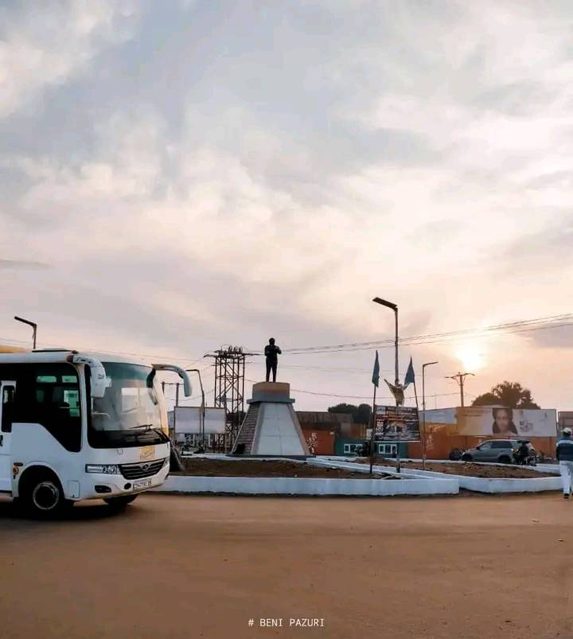
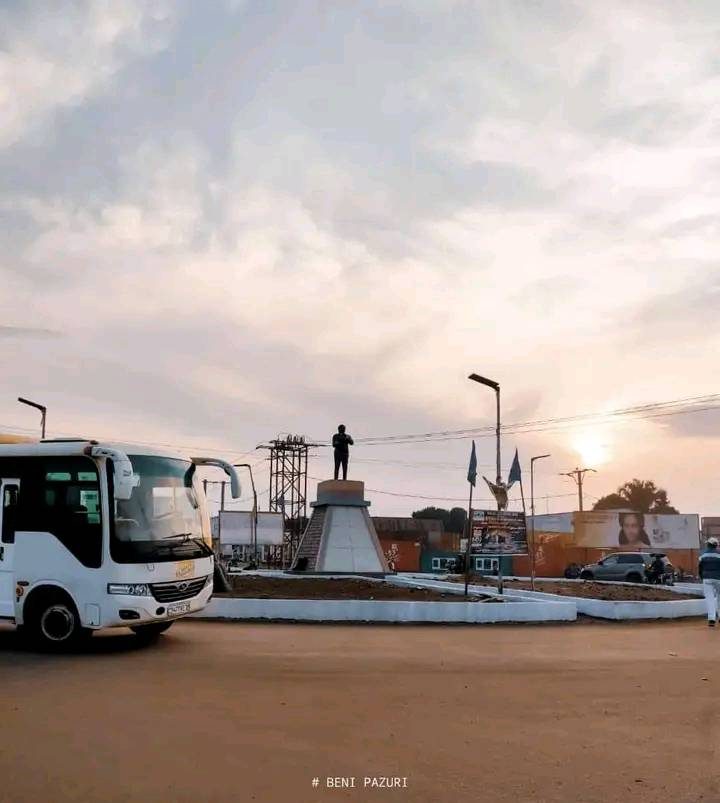

BATOTO YA BENI
BENI TOWN
The city of Beni is the second largest city in the northeastern part of the Democratic Republic of Congo after the city of Goma. It is located near the Virunga National Park, on the plateau of Mount Ruwenzori (5109 m above sea level), on the edge of the Ituri forest.
LES GRANDS REPERES DE LA VILLE
Hotel de ville
L'Hotel de ville
Hopital general
Hopital general de reference de Beni
Marché
Architect & Engineer
Stade de foot
Stade Principal de la ville de Beni
KWETU NI BENI
HISTORY OF BENI
The city of Beni is the second largest city in the northeastern part of the Democratic Republic of Congo after the city of Goma. It is located near the Virunga National Park, on the plateau of Mount Ruwenzori (5109 m above sea level), on the edge of the Ituri forest. It is located 90 km from Kasindi, a town that borders Uganda. We will also present the history of the town of Beni.
 
